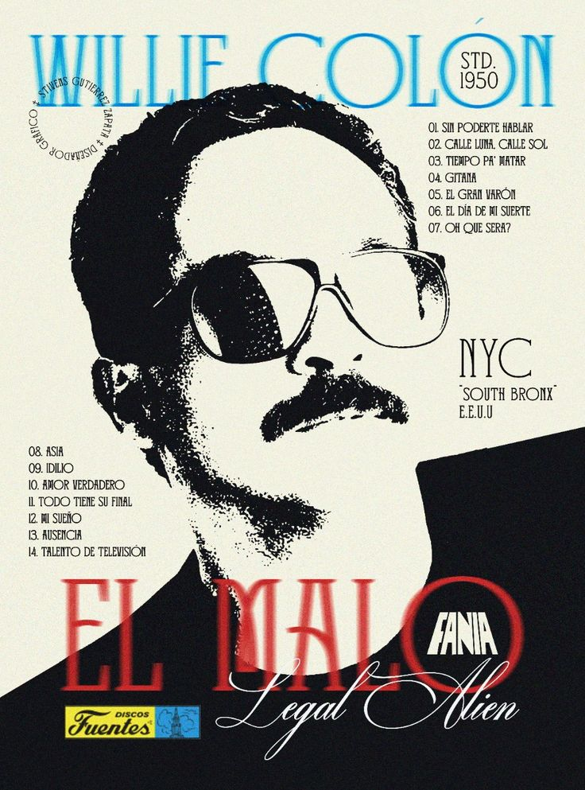
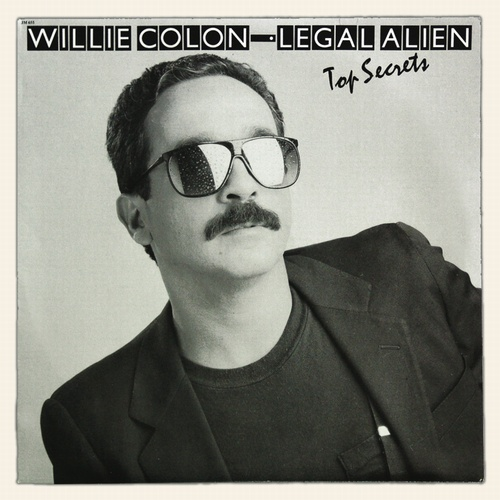
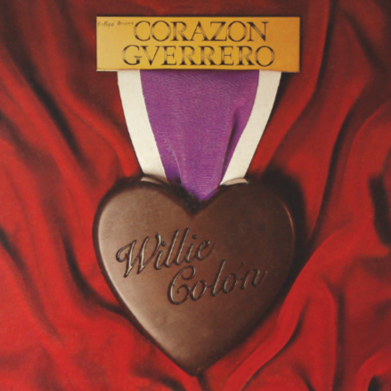
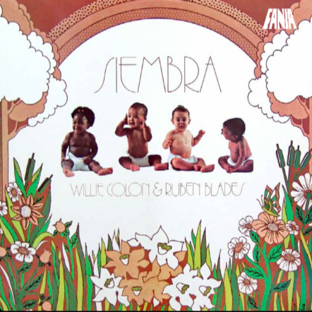

William Anthony Colón nació el 28 de abril de 1950 en la ciudad de Nueva York, nieto de emigrantes puertorriqueños, quienes lo nutrieron de música tradicional puertorriqueña y de otros ritmos típicos del repertorio latinoamericano como el son cubano y el tango. A los 11 años mostró predisposición por los instrumentos de viento, iniciándose en el clarinete; posteriormente pasó a la trompeta, y finalmente el trombón, que fue el que lo consagró. Se ha dicho que cambió la trompeta por el trombón al oír a Mon Rivera en su interpretación de la bomba y la plena, siendo su referencia Barry Rogers.
Willie Colón creció en el barrio latino del distrito del Bronx, un hecho que marcaría gran parte de su trayectoria personal y artística, con lo que ello implicaba de rebeldía y trasgresión de las normas establecidas. Tras estudiar trompeta y clarinete, su admiración por Mon Rivera le llevó a decantarse por el trombón a los catorce años, y dos años después, en 1966, grabó su primer disco con el significativo título de El Malo.

Discografía Recomendada
Top Secrets (1989)

Titulo
Así Es La Vida
Primera Noche De Amor
El Gran Varón
Cuando Fuiste Mujer
Junto a Ti
Nunca Se Acaba
Asia
Marta
Compositor(es)
Willie Colón
Pietro Carlos
Omar Alfanno
Héctor Garrido / Vilma Planas
Eddy Marnay / Pierre Jeantet / Jose Puron
Willie Colón
Willie Colón
Willie Colón
Duración
6:55
3:51
6:49
4:53
5:57
4:54
5:46
6:01
Corazón Guerrero (1982)

Titulo
Corazón Guerrero
¿Qué Pasará Mañana?
Suéltale el Rabo al Drágon
Amor Barato
El Hijo y el Papá
Casanova
Dormido, No
Compositor(es)
Mark Knopfler
Gerald Goffin, Carole King
Willie Colón
Francis Hime, Francisco Buarque de Hollanda
Jean-Lup Dabadie / Sylvian Krief
Sylvian Krief
Jacques Brel
Duración
7:53
4:39
6:02
5:14
4:28
3:23
5:40
Siembra (1978)

Titulo
Plástico
Buscando Guayaba
Pedro Navaja
María Lionza
Ojos
Dime
Siembra
Compositor(es)
Rubén Blades
Rubén Blades
Rubén Blades
Rubén Blades
Johnny Ortíz
Rubén Blades
Rubén Blades
Duración
6:38
5:43
7:20
5:27
4:50
6:59
5:21
Legado
Willie Colón es un pintor de los rostros de su gente, un artista que plasmó en sus canciones –con su sonido fuerte– la conciencia de una generación que exigía el respeto social y que luchó por la vindicación de sus condiciones de vida.
América Salsa describió: "su música refleja, a la vez, una lírica tradicional rítmica y el llanto de adiós y esperanza de una nueva generación, forzada a abandonar su tierra para congregarse en la urbe estadounidense". Aunque hubo otros músicos de la época que asumieron la misma línea temática, nadie mejor que él supo conjugar en armonías el sentimiento de desgarro y desamparo de la diáspora.
Se lo destaca como el precursor de la salsa, música ideal para tratar temas de las clases marginadas, pero que poco a poco alcanzó otras audiencias sin perder su rebeldía original. Este experimento le dio unidad a la música que se hacía en el entorno de Nueva York, al asimilar los ritmos caribeños, latinoamericanos y norteamericanos y crear un sonido moderno, agresivo y bastante experimental, si bien no niega la influencia de la música cubana en la salsa, afirma que ésta no es equivalente a "salsa", pues ha dicho que él: puede dar un concierto de dos horas sin interpretar ningún ritmo cubano y a pesar de esto, tocar salsa. Al respecto es famosa su frase "la salsa no es un ritmo, es un concepto".